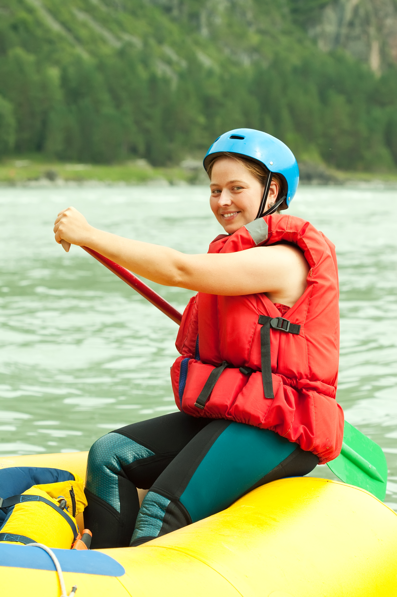
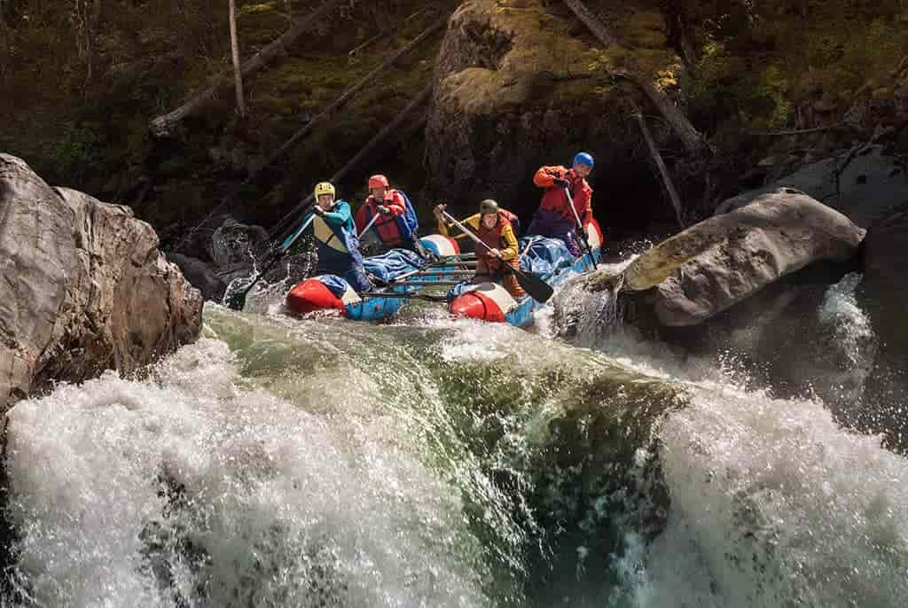

White water rafting is an exciting and thrilling way to experience the beauty of rivers and rapids. Whether you're a beginner or an experienced paddler, there's always something new to discover on the water.


White water rafting is an exciting and thrilling way to experience the beauty of rivers and rapids. Whether you're a beginner or an experienced paddler, there's always something new to discover on the water.
The history of white water rafting dates back to the early 20th century, with the first recorded rafting expeditions taking place on rivers like the Colorado River in the United States. Over the years, it has evolved into a popular recreational activity and competitive sport, attracting thrill-seekers from around the world.